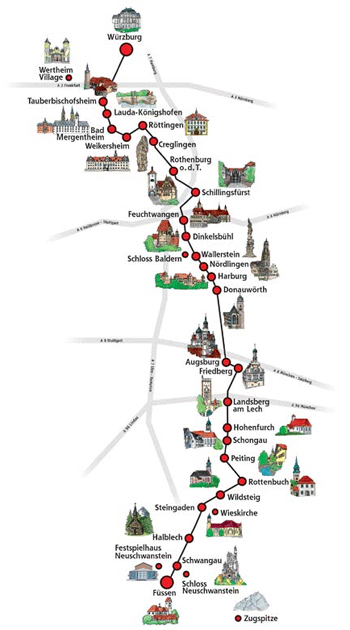

MARCH TO MAY
Spring
The trees start to blossom and there are not many tourists yet. Hotels are often cheaper than in summer, and from the end of March Neuschwanstein has its longer summer opening hours.
GERMANY · BAVARIA
Old towns, castles and the Alps on the way from Würzburg to Füssen.
01 / WELCOME

WHAT IS THE ROMANTIC ROAD?
The Romantic Road (in German "Romantische Straße") is a holiday route in the south of Germany. It is not one new road, but a route on normal country roads that connects 29 towns on about 460 km. Most of it lies in the state of Bavaria, only a short part in the north is in Baden-Württemberg. Brown road signs show you the way.
The route was created in 1950 to bring tourists back to Germany after the Second World War. It is called "romantic" because of what you see on the way: medieval town walls, half-timbered houses, baroque palaces, vineyards in the north and the Alps in the south. Near the end of the road stands the fairy-tale castle Neuschwanstein.
In this guide you find the best stops, the most important sights and a planner for your own trip.
GOOD TO KNOW
02 / WHEN TO GO
MARCH TO MAY
The trees start to blossom and there are not many tourists yet. Hotels are often cheaper than in summer, and from the end of March Neuschwanstein has its longer summer opening hours.
JUNE TO AUGUST
Long days, beer gardens and many town festivals. This is the busiest time of the year, so book your hotel and your castle tickets early.
SEPTEMBER TO OCTOBER
Harvest time in the vineyards around Würzburg, and many wine villages celebrate wine festivals. The forests around Neuschwanstein turn red and gold.
NOVEMBER TO FEBRUARY
In December the old towns have beautiful Christmas markets, like the Reiterlesmarkt in Rothenburg. With snow, Neuschwanstein looks like a fairy tale, but the opening hours are shorter.